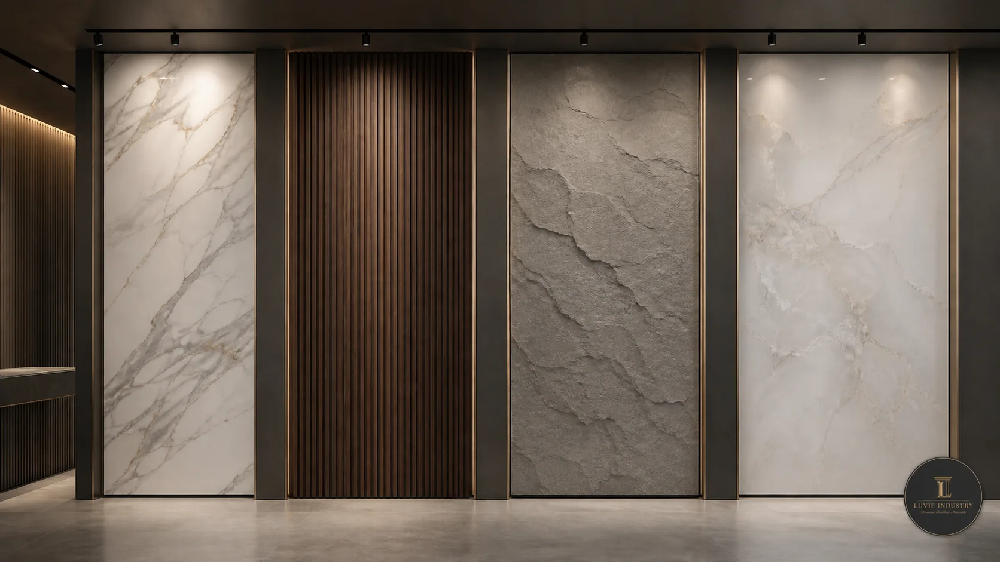

Wall Panel Standards and Independent Evidence: What Buyers Can Actually Verify
PVC, WPC, PU stone and UV board can all be useful product categories. A professional buyer, however, separates a material-level advantage from proof for a particular panel, factory batch, installation system and destination market.

1. What the material category can establish
The NIH PubChem reference for polyvinyl chloride identifies PVC as a widely produced synthetic polymer available in rigid and flexible forms, with established construction uses. That supports PVC as a mature material family. It does not tell a buyer the thickness, joint design, coating, fire classification or service life of a specific wall panel.
WPC is also a family rather than one fixed recipe. USDA Forest Products Laboratory research describes how formulation, processing, UV exposure and water exposure influence wood-plastic composite weathering. A buyer should therefore compare exact indoor and exterior systems instead of assuming that all products labelled WPC perform alike.
| Category statement | What it reasonably supports | What still needs product evidence |
|---|---|---|
| PVC is used in construction | A mature polymer family with multiple rigid and flexible applications | Panel profile, surface, joint, emissions, fire result and wet-area installation |
| WPC combines wood and polymer | A composite family whose properties can be adjusted by formulation and processing | Indoor or exterior suitability, UV stability, moisture behavior and fixing system |
| PU stone is lightweight | A decorative stone-look option that can reduce handling weight versus solid stone | Coating durability, fire evidence, joint appearance and exact exterior exposure |
| UV board has a finished face | A large-format decorative surface category | Core composition, edge behavior, gloss tolerance, emissions and substrate condition |
2. Moisture resistance is not the same as a waterproof wall system
The U.S. EPA moisture-control guidance treats moisture as a building-design, construction and maintenance issue. That matters because water can bypass a moisture-tolerant panel through joints, corners, penetrations, failed sealant or a damp substrate.
For bathrooms or humid commercial interiors, the useful claim is not simply “PVC is waterproof.” The buyer needs the exact SKU, joint geometry, trim system, sealant specification, substrate condition, wet-zone limits and maintenance method. Read the detailed PVC wall panel bathroom guide before approving an application.
3. WPC weathering data shows why exposure conditions matter
A USDA review of WPC durability reports one accelerated-test example in which a wood–polypropylene composite exposed to 2,000 hours of UV light showed 13% lightening and a 12% decrease in flexural modulus. When water spray was added to the UV exposure, the same research summary reported 46% lightening, with flexural modulus and strength decreases of 52% and 34%.
Those numbers describe a specific experimental material and test, not every commercial WPC panel. Their value is the pattern: UV, heat and water interact. The current ISO 4892-3:2024 defines fluorescent-UV, heat and water exposure methods for plastic specimens. For an exterior claim, ask which specimen was tested, for how long, under which cycle and how the result was evaluated.
4. A fire report must match the tested construction
ASTM E84-26a is a comparative test for surface flame spread and smoke density of building materials used on exposed walls and ceilings. ASTM also states that the method does not measure heat transmission, does not by itself define a material as noncombustible and does not incorporate every factor in real fire risk.
This is why “fireproof PVC” or “fire-rated WPC” is too broad. Check the report’s manufacturer, model, composition, thickness, surface, backing or mounting, test method, laboratory, issue date and result. The destination project or authority decides whether that evidence is acceptable.
5. Indoor-air evidence is separate from appearance and fire evidence
The California Department of Public Health describes a health-based standard method for testing chemical emissions from building materials using environmental chambers. It is one recognized framework for indoor-material emissions; other markets may use different schemes.
A fire report does not prove low VOC emissions, and a low-emissions report does not prove waterproofing or exterior durability. Keep each claim connected to the test that actually measures it.
6. Color and gloss can be controlled with numbers
ISO/CIE 11664-6:2022 specifies the CIEDE2000 method for calculating colour difference from CIELAB coordinates. ISO 2813:2014 separately defines gloss measurements at 20°, 60° and 85° for suitable non-textured coatings.
These standards do not supply a universal acceptable tolerance for every decorative panel. Buyer and supplier still need to agree the master sample, measurement position, instrument, geometry, batch tolerance and decision rule. See the batch color-difference guide for a repeat-order workflow.
7. Quality systems and product inspection answer different questions
ISO explains ISO 9001 as a quality-management-system framework. Certification can support confidence that a supplier manages processes, but it is not certification of every wall panel model.
For product acceptance, ISO 2859-1:2026 defines AQL-indexed sampling schemes for lot-by-lot inspection. The purchase specification should still identify what counts as a critical, major or minor defect and which checks require measurement or functional fitting.
8. Evidence continues after production
The IMO/ILO/UNECE CTU Code provides global guidance for packing and securing cargo transport units. It supports documenting carton strength, stacking, load distribution, blocking, bracing and receiving conditions rather than treating a container as empty cubic volume.
When raw-wood pallets, crates or dunnage are used, the International Plant Protection Convention’s ISPM 15 guidance explains treatment and marking for regulated wood packaging. For commercial responsibility, the ICC Incoterms® 2020 rules define terms including FOB and CIF.
9. A practical evidence hierarchy for buyers
- Category source: explains what PVC, WPC or another material family is.
- Current product specification: identifies the exact model, dimensions, construction and intended use.
- Approved physical sample: establishes the visual and fitting reference.
- Relevant test report: measures one defined property of a matched specimen.
- Production inspection: checks whether the shipped lot conforms to the agreed standard.
- Installation and destination review: confirms that the system fits local codes and actual exposure.
Evidence questions buyers should ask
Does a material name prove that a wall panel is waterproof?
No. Check the entire panel-and-installation system, including joints, trims, penetrations, substrate, sealant and exposure.
Does ISO 9001 certify wall panel performance?
No. It addresses a supplier’s quality management system. Product performance still requires product-specific specifications, inspection and relevant test evidence.
Can one report cover every similar-looking panel?
Not automatically. Match the report to the manufacturer, model, composition, dimensions, finish, mounting, method and date.
Which standards should an importer request?
Start from the destination market and application. Then identify the relevant fire, emissions, weathering, color, quality, packing and regulatory evidence.
Primary and institutional sources
- NIH PubChem — Poly(vinyl chloride)
- U.S. EPA — Moisture Control Guidance
- USDA Forest Products Laboratory — Weathering of WPCs
- ASTM E84-26a — Surface Burning Characteristics
- California Department of Public Health — VOC Emissions
- ISO 4892-3:2024 — Fluorescent UV Weathering
- ISO/CIE 11664-6:2022 — CIEDE2000 Colour Difference
- ISO 2859-1:2026 — AQL Sampling
- UNECE — CTU Code
- IPPC — ISPM 15 Implementation
- ICC — Incoterms® 2020